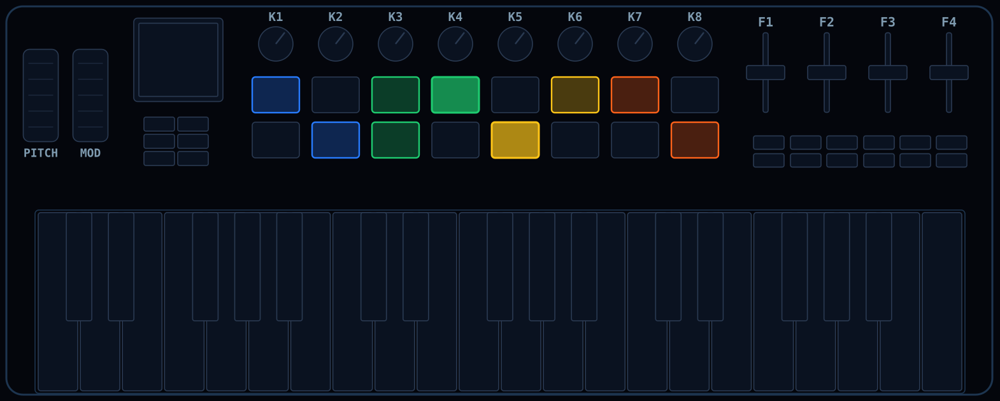
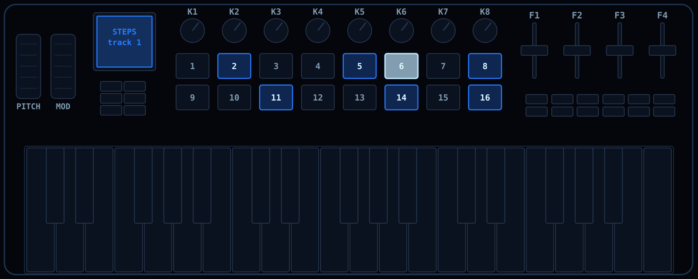
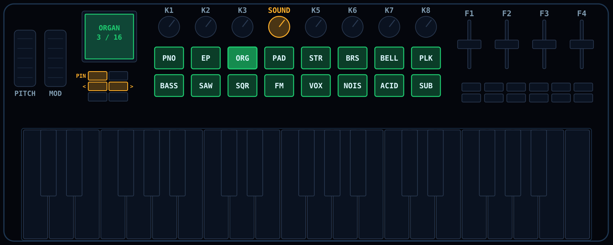
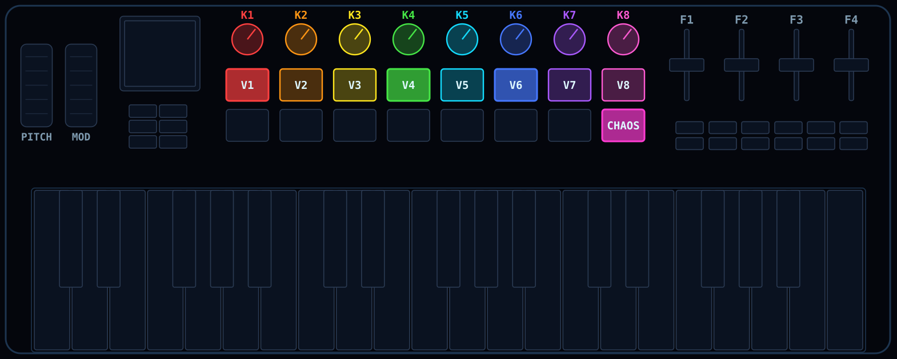
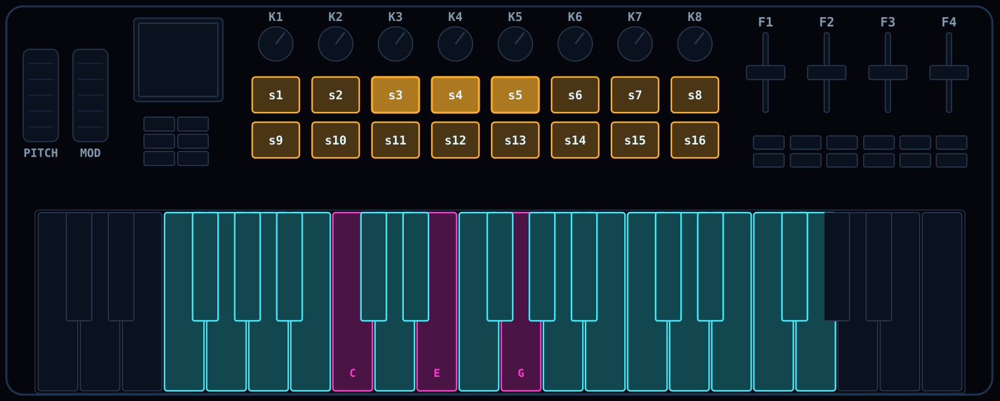
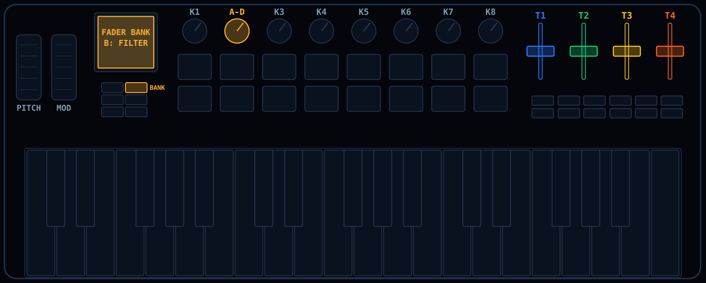
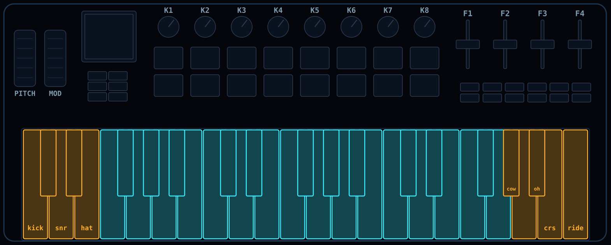
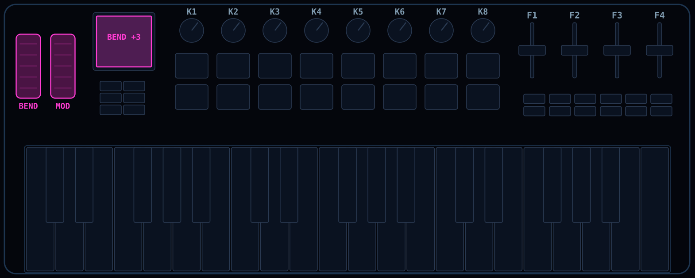

Migrate FM-1 firmwares to the SMK-37. Develop agnostic of the board.
github.com/genkigenki/fm1-to-smk37The FM-1 and the SMK-37 share the JieLi AC791N, the boot chain and the update loader. The kit holds what a coding agent needs to move an FM-1 firmware across: a board patch series, the hardware map, a playbook with hard rules, mapping patterns from the ports so far, and a setup file for your decisions.
> Clone <firmware repo> and github.com/genkigenki/fm1-to-smk37, then port the firmware to the SMK-37. Follow fm1-to-smk37/AGENTS.md step by step. Ask me the setup questions first. Keep the FM-1 build byte-identical. Never write the protected flash ranges. Ask me before you flash the SMK-37.
Open Claude Code in an empty folder on your PC (Windows with WSL, or Linux) and paste the prompt. It clones the firmware and the kit and sets up the toolchain; you approve each command.
Claude asks what the pads, faders, outer keys and wheels should do, and maps them.
Board layer, both builds and tests.
You test the build and give feedback; Claude fixes.
An upstream pull request and your own release.
The controls the FM-1 does not have, and how the ports use them.








Track-colour pads, sound picker, fader banks.
PR isod89/sloop-fm1#112Drum machines and 303s, pads as the step grid.
PR charlesvestal/fm1-x0x#13A chord harp: strum the pads, chords on the keys.
PR charlesvestal/fm1-fomni#2An ambience machine: verbs on the buttons and wheels, likes on the pads.
PR okumurari2/maku#4Also: the SMK-37 as a build target in Felucca, hugelton/Felucca#237.
One source tree builds the FM-1 and the SMK-37. The kit describes how: docs/07-develop-for-both.md.
Features ask what the board has (pads, faders, wheels, outer keys, RGB), with an FM-1 fallback in the same place.
FM-1 byte-identical, SMK per model, host tests, on every change.